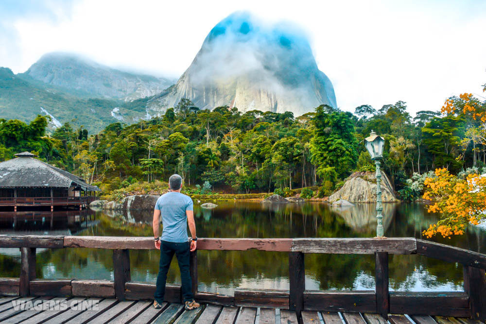
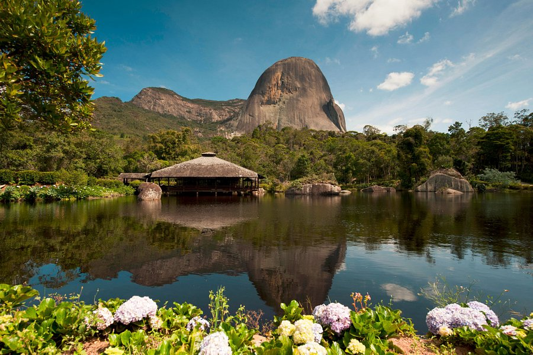
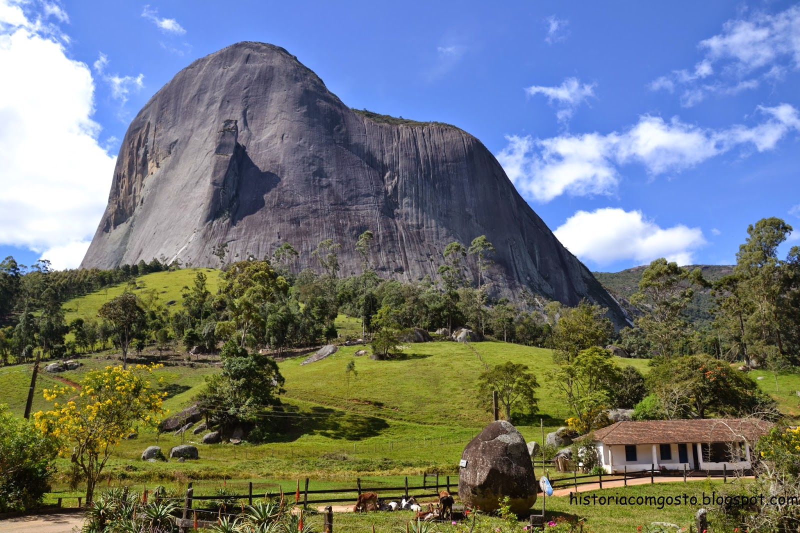
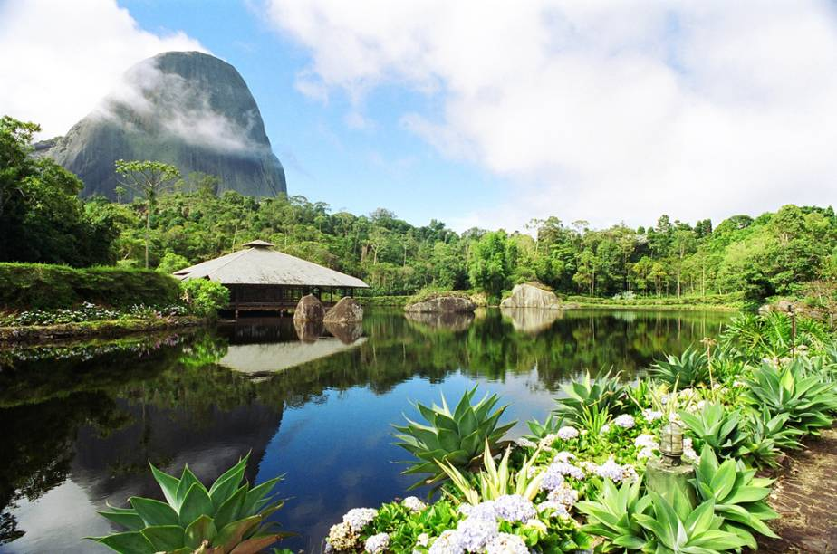
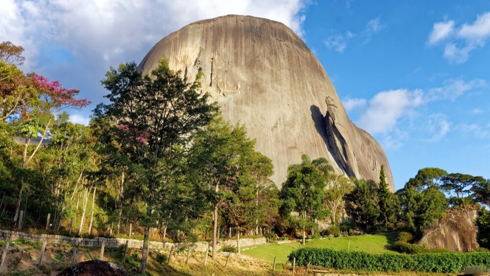

Olá Seja bem vindo(a) a Pedra Azul!

Curiosidades:
Com uma altitude média de 1350 m, o parque estadual de Pedra Azul tem uma área de 1.240 hectares dos quais apenas 5% é aberto a visitação
Você ja conhece a região de montanhas do espirito santo?

Mesmo com o nome "PEDRA AZUL" a pedra pode ter outra coloração devido ao líquen que cresce no seu interior
Me chamo Rogerio e serei seu guia nessa jornada, vamos colocar pra quebrar!

LOCAIS PARA CONHECER: Devido a riqueza e diversidade da região, podemos dividir a região turística de Pedra Azul em alguns circuitos; a) Rota do Lagarto; b) Vila, Aracê e São Paulinho; c) Caxixe e Bela Aurora; d) Estrada Afonso Claudio; e) Venda Nova entre outros!
NÃO PERCA TEMPO E VENHA CONFERIR DE PERTO NOSSA BELEZA!

LEMBRANDO DE RESPEITAR OS PROTOCOLOS DE SAÚDE (distanciamento, higienização, máscara entre outros.)

MUITO OBRIGADO POR CHEGAR ATÉ AQUI!
ESTAMOS ANSIOSO PELA SUA VISITA, ATÉ BREVE.